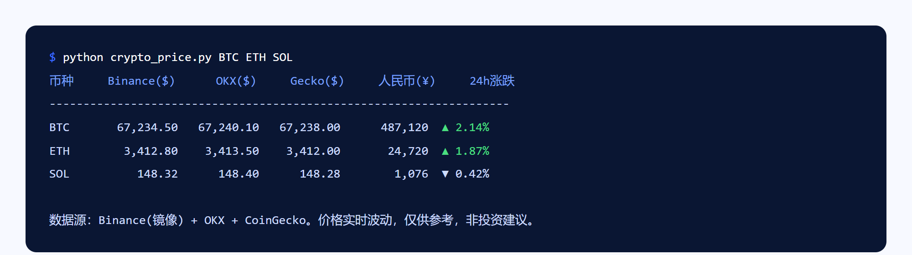

三数据源（Binance + OKX + CoinGecko）同时查币价，互相校验防单点错价，一眼看出哪个数字不对劲。
为什么做、怎么取舍、做完带来什么。
查币价的工具很多，但单一数据源可能因地区限流、接口延迟返回错误或滞后数据。交易决策建立在错价上是致命的。
同时查 Binance（公开镜像绕开国内限流）+ OKX + CoinGecko，三个数字并排摆出来，异常一眼可见。三个源都是公开行情接口，不需要注册、不需要 key。
现在是我看盘的第一道工具，加 --save 参数就能把结果存进 CSV，配合后续分析脚本使用。
终端运行效果。
